ASYA EĞİTİM · VISUAL EXPLORATION · İNCELEME (sıralama yok, öneri yok)
Visual Exploration — tüm denemeler
Büyütmek için görsele tıkla. Geçici inceleme sayfasıdır.
12 YÖN Territory denemeleri — fırça, tipografi, kafes-kare, genç, gelecek
01A · Contemporary Ink — restrained

01B · Contemporary Ink — graphic
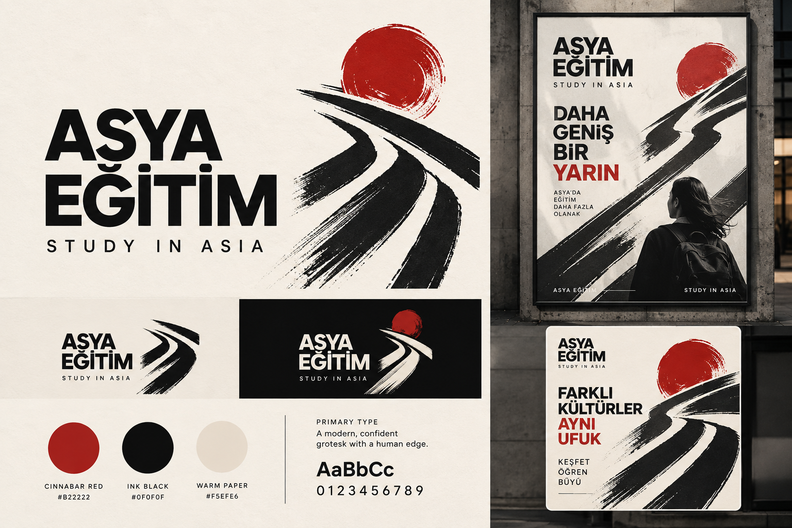
04A · Brush + Geometry — subtle
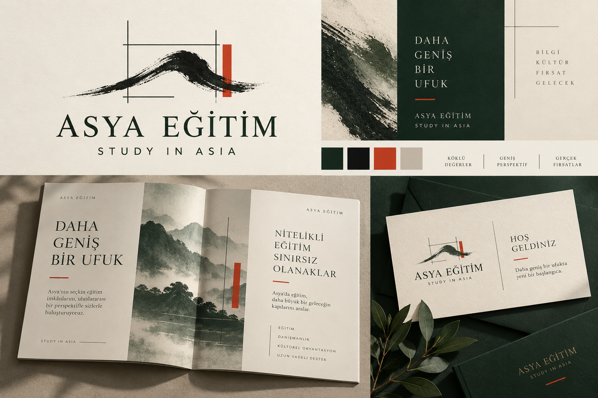
04B · Brush + Geometry — bold

05A · Typographic Asia — refined

05B · Typographic Asia — experimental

06A · Open Character — scholarly

06B · Open Character — bold
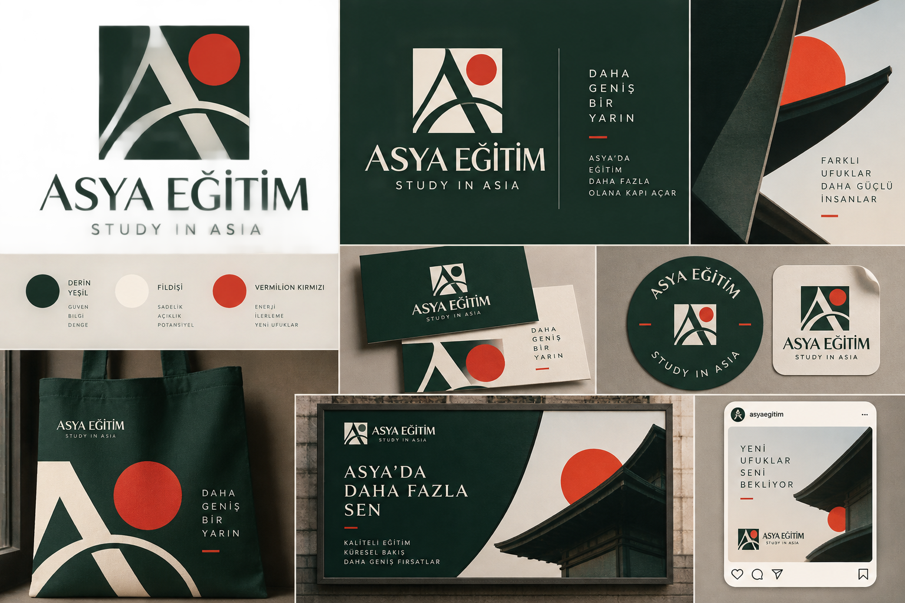
07A · Young Asia — bright

07B · Young Asia — editorial

08A · Future East — minimal
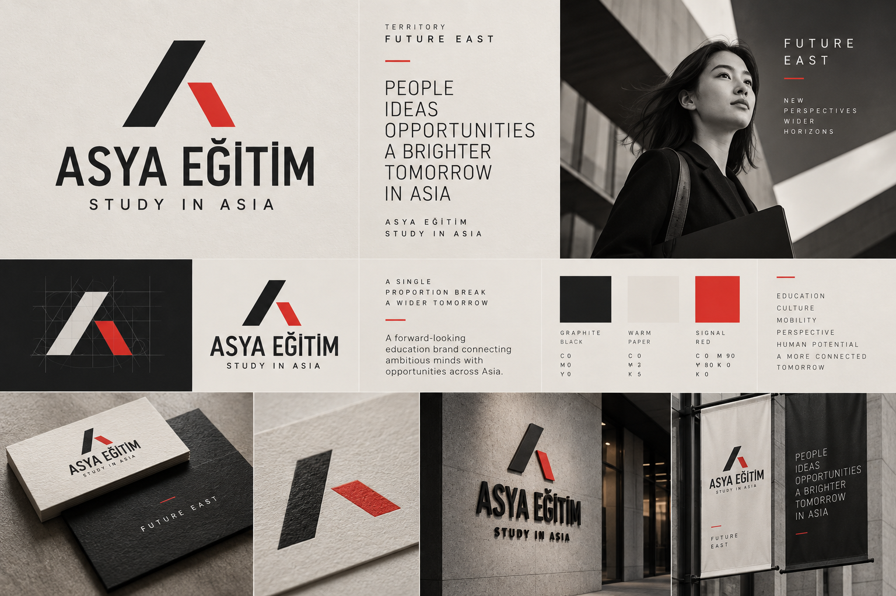
08B · Future East — expressive
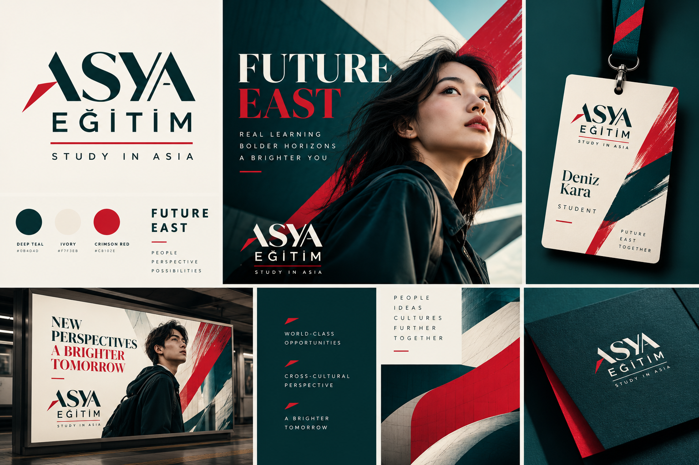
5 ÜLKE Ülke Dünyaları — Çin · Hong Kong · Japonya · G. Kore · Singapur
Çin — kafes geometrisi + vermilion

Hong Kong — gece-teal + neon mercan

Japonya — ma boşluğu + vermilion

Güney Kore — kobalt/beyaz/kırmızı ritim

Singapur — tropik-modern yeşil + kırmızı
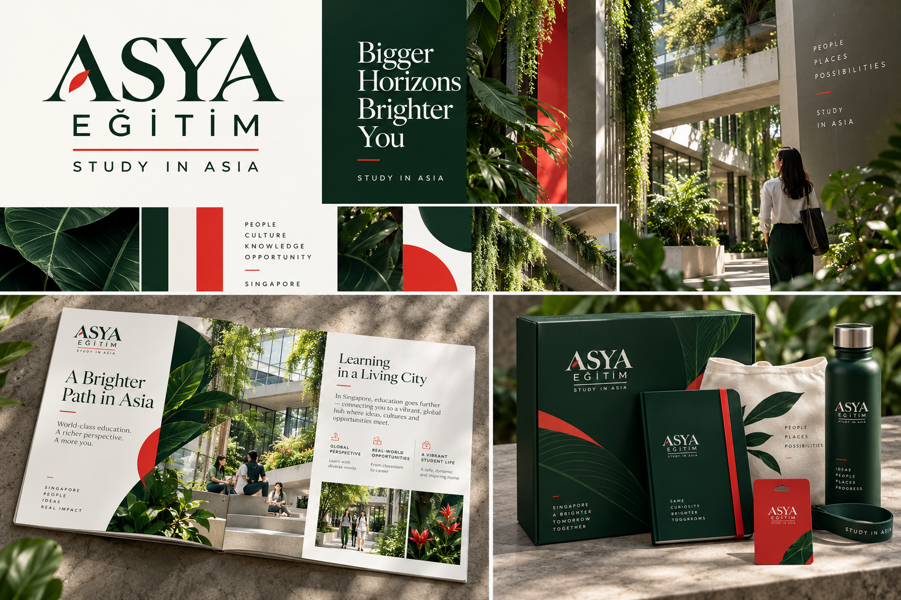
5+3 Ülke B + Uygulama Sahneleri — ikinci yorumlar, fuar, ofis, sosyal
Çin B — gece kampüsü
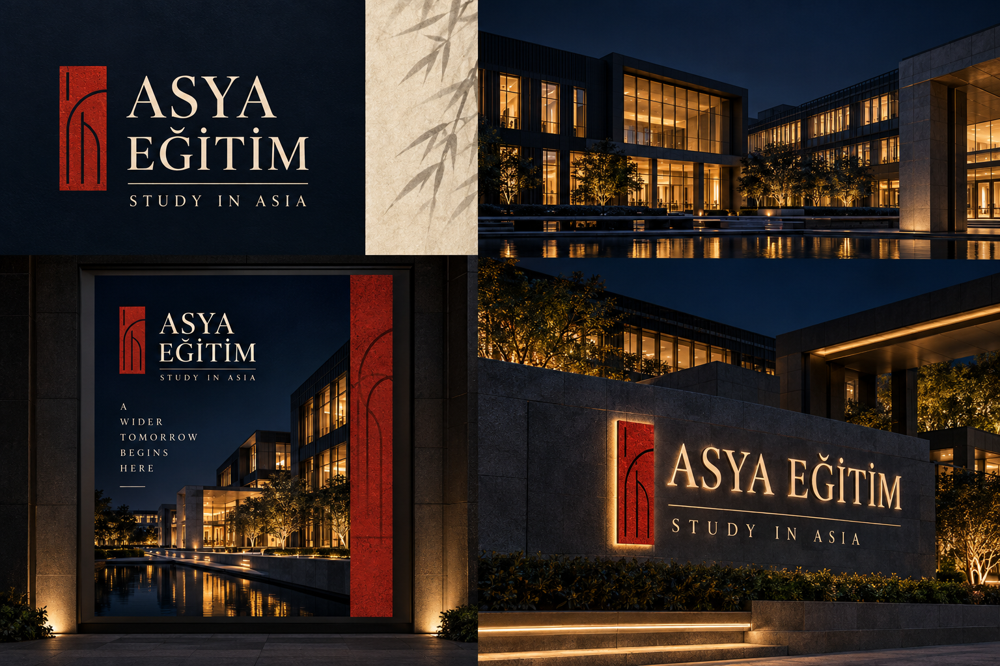
Hong Kong B — gündüz liman ışığı
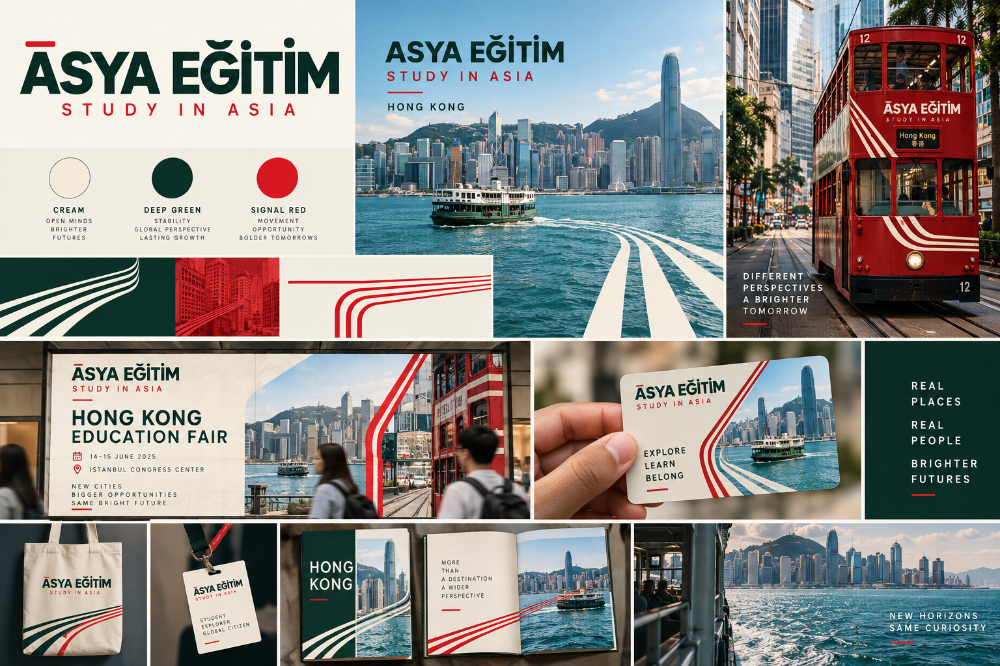
Japonya B — sıcak zanaat
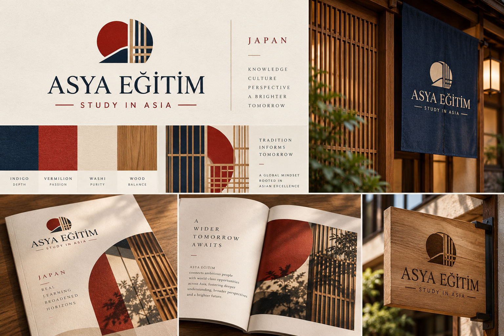
Güney Kore B — mürekkep minimal
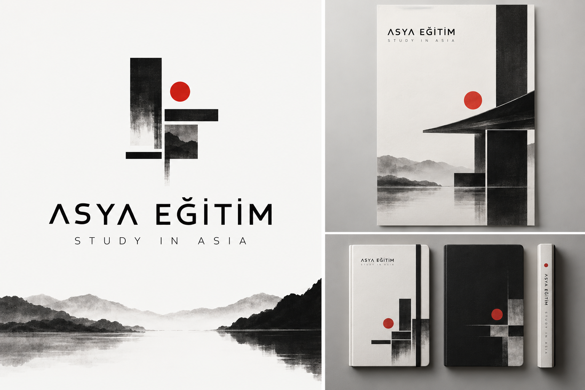
Singapur B — gece bahçesi

Fuar standı

Danışma ofisi
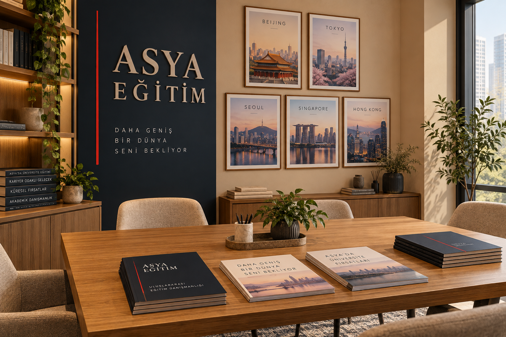
Sosyal medya üçlüsü
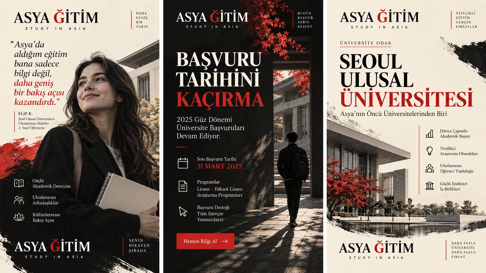
4 MÜHÜR Mühür Dünyaları — Scholar’s Seal referansından
Mühür-soyut (dağ+yol)

Mühür-ızgara (kapı-mühür + sistem)
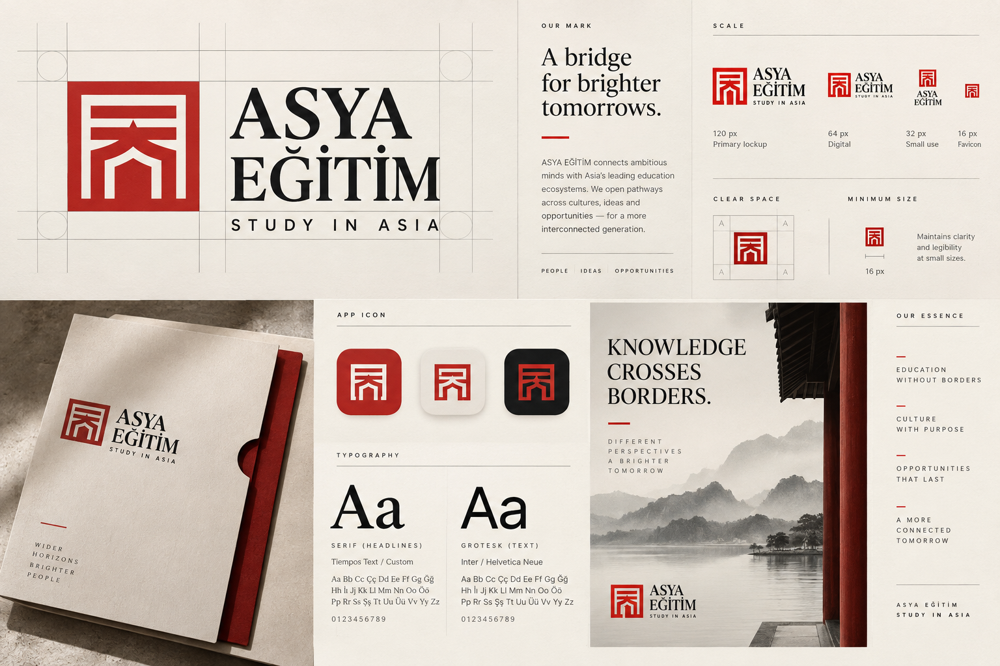
Mühür-baskı (kırtasiye sistemi)
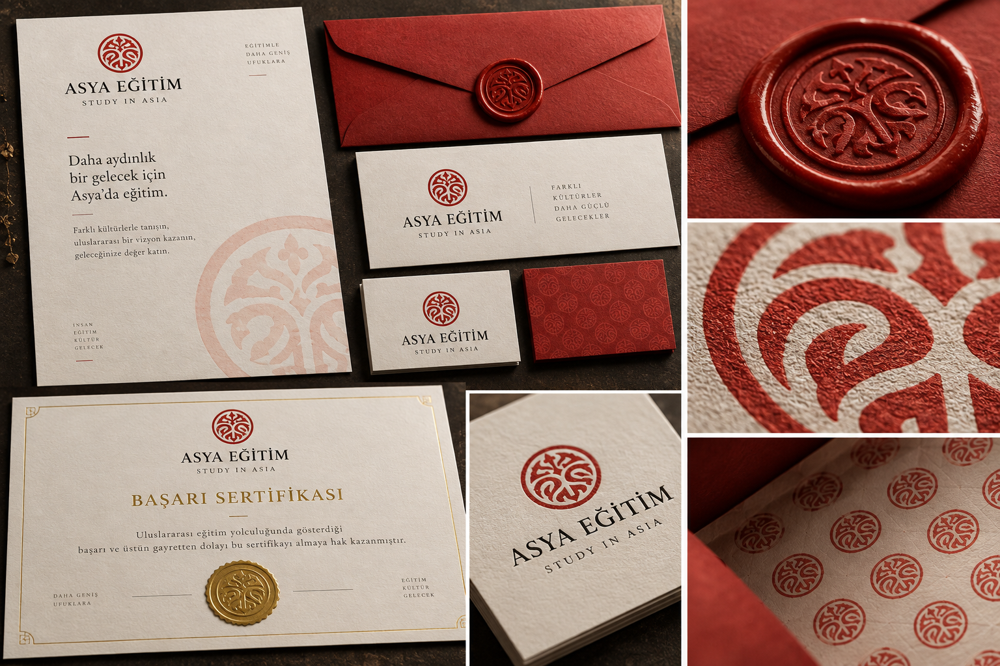
Mühür-gece (ışıyan koyu zemin)
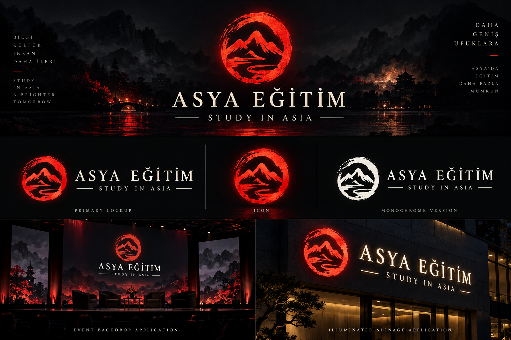